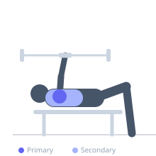
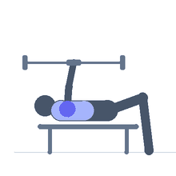

Exercise guide / Landmine Meadows Rear Delt Flye
Landmine Meadows Rear Delt Flye
The landmine Meadows rear delt flye uses the bar end of a landmine setup and a staggered stance to perform a rear delt fly with a fixed arc of motion determined by the pivot of the barbell. Unlike dumbbell reverse flyes, the landmine provides a constant and smoothly changing resistance curve, and the bar's weight progression is more granular, making it excellent for systematically building rear deltoid strength.
Primary muscles
deltoid posterior
Secondary muscles
trapezius middle
rhomboid major
Stabilizers
erector spinae
Equipment
No Equipment (Bodyweight)
Optional
Hyperextension Bench (45°)


Starting position
- Secure a barbell in a landmine unit. Stand perpendicular to the bar in a staggered stance, hinge forward at the hips. Grasp the bar end with one hand, arm hanging below the shoulder.
Setup
- Hinge to approximately 45-70 degrees forward so the bar end hangs naturally. Use lighter loading than a Meadows row — rear delts are smaller than lats.
Steps
- Step 1: Begin hinged with bar end hanging in the working hand.
- Step 2: Raise the working arm out to the side in a lateral arc, keeping the elbow slightly bent.
- Step 3: Continue raising until the arm is at shoulder height.
- Step 4: Hold 1 second.
- Step 5: Lower under control back to the hanging position.
Coaching cues
- Lead with the elbow — slight bend throughout
- Think of pulling the arm upward like opening a wing
- Feel the back of the shoulder contract at the top
Breathing
- Exhale raising. Inhale lowering.
Range of motion
- Arm hanging to shoulder height lateral position.
Tempo
- 2-1-2-0
Common mistakes
- Bending the elbow too much — this becomes a row, not a fly
- Excessive torso rotation to assist the raise
Safety
- Light loads — rear delt is a small muscle group
- Maintain stable hinge position throughout
Training
- hypertrophy: 12–20 reps
- hypertrophy: 3–4 sets
- Rest: {'hypertrophy': 60}